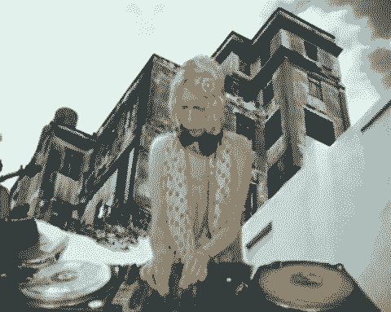
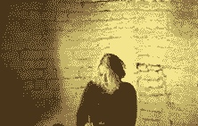

this is a tribute page to abelle
ARMA17 MIXES
Your browser does not support the audio element.
Your browser does not support the audio element.
abelle :heart eyes: <3 <3 <3
You are now listening to: Arma17: Abelle - RTS.FM.080711 July 25 2013
Microhouse is a genre rooted in minimal techno, bitpop, and house music. Emerging in the early 1990s, its foundations were influenced by the experimental glitch work of German artist Oval in 1993. The genre blends "housey minimal techno" with elements of funky, groovy house, bitpop, and the repetitive structures of techno, emphasizing cushiony kick drums, hi-hats, and faint synthetic textures. Key artists like Jan Jelinek (as Farben), Luomo (with the influential Vocalcity album), and labels such as Playhouse, Kompakt, Perlon, and Force Tracks played pivotal roles in popularizing the genre during the late 1990s and early 2000s. Microhouse continues to thrive, with artists like Jon Hopkins, Pantha du Prince, Four Tet, and others contributing to its evolution.

